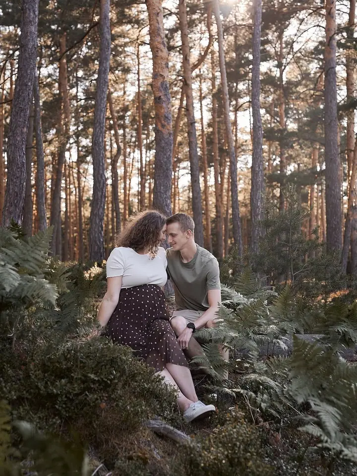
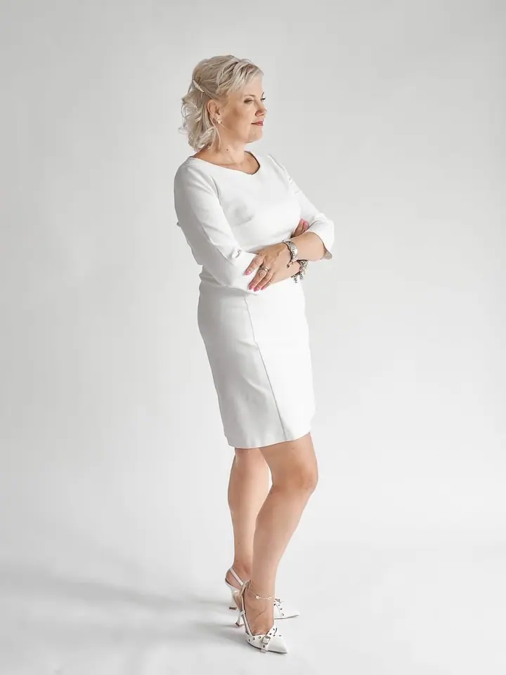
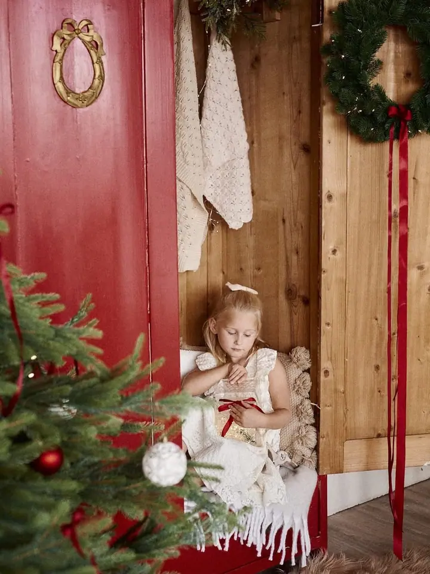

Newborn focení
Novorozence fotím ve studiu, v klidu a podle naladění miminka, většinou kolem 2,5 hodiny. Fotky dostanete digitálně i v tisku v dárkové krabičce.

Jmenuji se Jana, jsem maminka dvou dcer a ve svém studiu v Dolním Újezdě u Litomyšle fotím těhotenství, miminka a celé rodiny. Ráda fotím i ženy, protože v nich vidím kr…
Rezervovat termínDo focení jsem se zamilovala už jako malá holka. Líbilo se mi, že přes hledáček fotoaparátu vidím svět jinak a vidím mnohem víc. Ta vášeň mi vydržela dodnes a kouzlu fotografie propadám čím dál víc.


Dlouho jsem snila o životě fotografky, ale chyběla mi odvaha. Splnit si ten sen mi nakonec umožnila mateřská dovolená a díky velké podpoře manžela jsem začala své služby nabízet veřejnosti. Dnes mám vlastní studio, kde fotím pouze já, a každý rok v něm sama tvořím vánoční scény, které jinde nenajdete.
Fotka má v našich životech větší smysl, než si možná připouštíme. Připomíná nám, kým jsme byli a kdo jsme teď, vrací nám vzpomínky, pocity i emoce. Proto fotografii tolik miluji a proto to celé dělám.
Co fotím
Novorozence fotím ve studiu, v klidu a podle naladění miminka, většinou kolem 2,5 hodiny. Fotky dostanete digitálně i v tisku v dárkové krabičce.
Fotíme venku nebo ve studiu a délku focení přizpůsobím dětem, podle toho, jak dlouho je to bude bavit. Vybrat si můžete ze tří balíčků.
Vidím v ženách krásu a umím ji ukázat. Fotím ve studiu s mnoha scénami, v hotelu s vizážistkou a kadeřnicí nebo venku jako focení Soul.
Focení si můžete zvolit v přírodě i ve studiu, trvá zhruba hodinu. Po domluvě vám ráda zapůjčím šaty.
Postup
Napište mi přes formulář, e-mail nebo telefon, jaké focení si přejete a kdy by se vám hodilo. Společně vybereme balíček i místo.
Poradím vám s oblečením. Ve studiu můžete využít ateliérovou šatnu a na těhotenské focení vám po domluvě zapůjčím šaty.
Fotíme ve studiu nebo v přírodě a tempo přizpůsobím vám, dětem i miminku. Nikam nespěcháme.
Z hotových snímků si vyberete fotky do balíčku a já je pečlivě upravím. Na přání je připravím i v tisku, u newborn a dámského focení v dárkové krabičce.
Otázky
Moje studio najdete v Dolním Újezdě u Litomyšle. Těhotenské a rodinné focení můžeme udělat i v přírodě, newborn fotím ve studiu.
Těhotenské focení stojí 2 500 Kč, rodinné od 1 800 Kč a newborn 3 200 Kč. Dámské focení ve studiu vychází na 3 500 Kč, v hotelu na 6 200 Kč. Každá fotka nad rámec balíčku je za 200 Kč.
Záleží na spolupráci a naladění miminka, většinou je to kolem 2,5 hodiny. Je to čas na krmení, mazlení i přestávky.
Ve studiu je vybavená ateliérová šatna, kterou můžete při focení využít. Na těhotenské focení vám po domluvě zapůjčím i šaty.